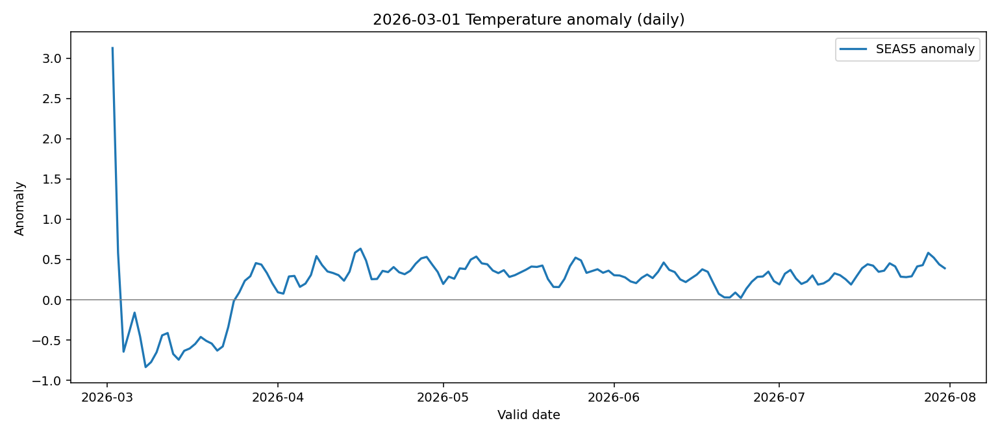
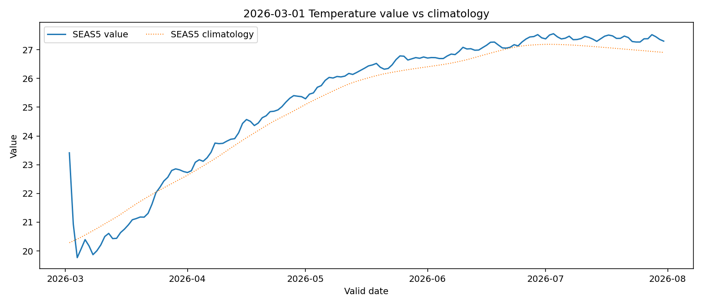
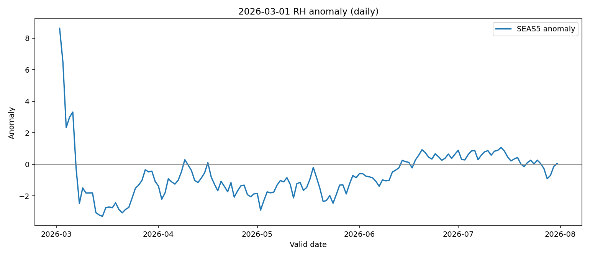
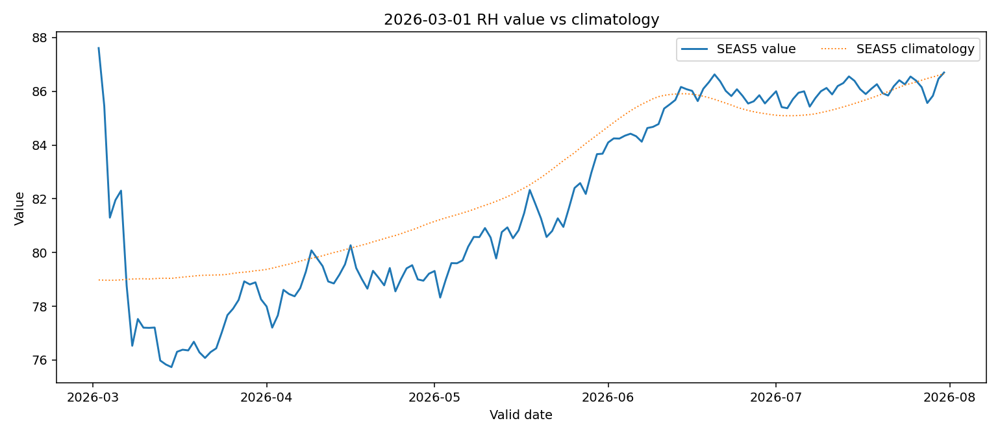
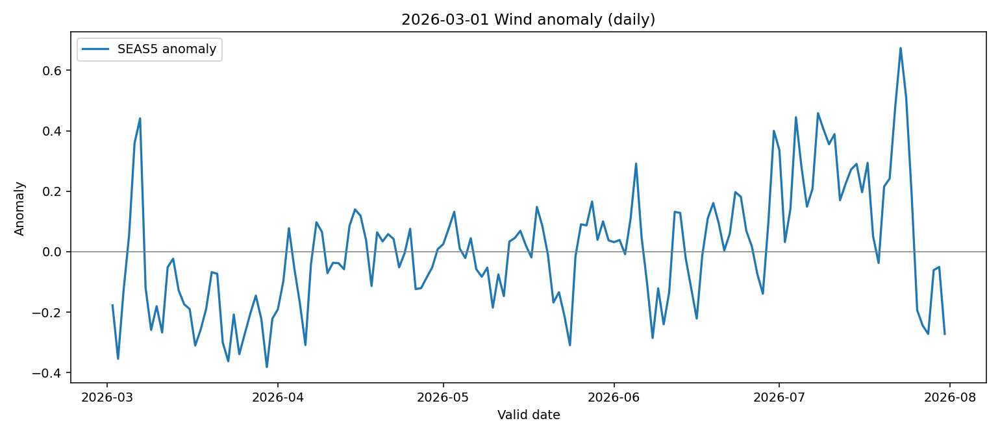
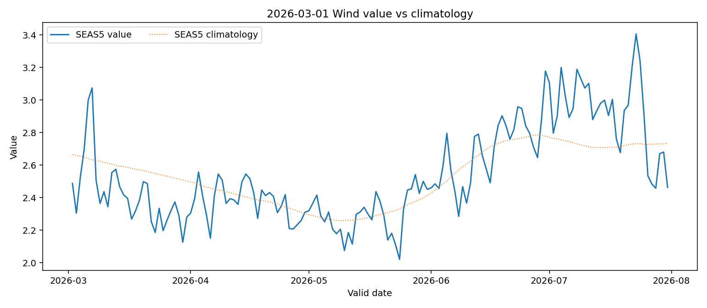
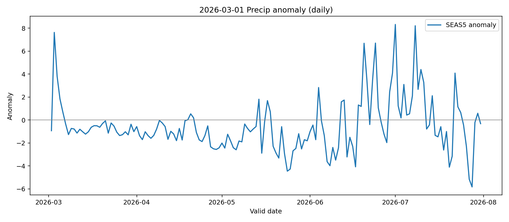
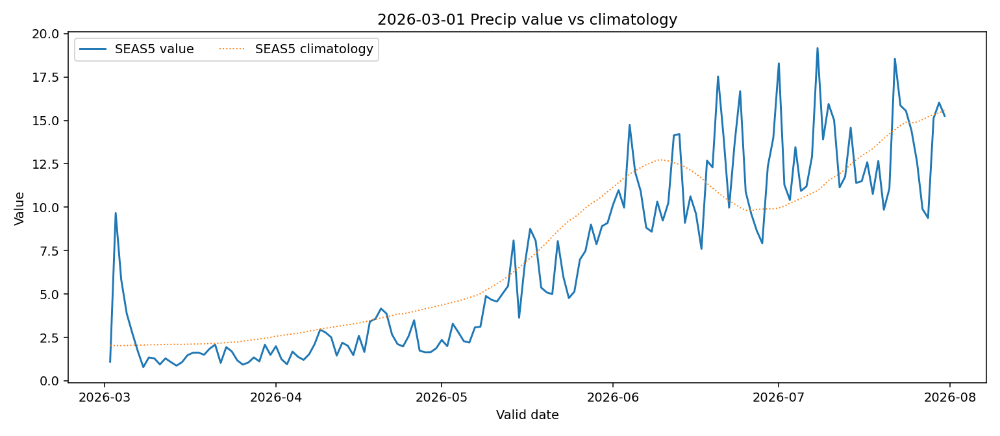

Target point requested: (23.000, 120.000).
Latest forecast grid: (22.500, 120.500), distance=0.707 deg.
Baseline climatology grid: (22.500, 120.500), distance=0.707 deg.
Method: nearest-grid matching; SEAS5 climatology 2000-2025 with day-of-year ±7-day window; precipitation dual-track anomaly (difference + ratio).
Rows in selected init: 152
| Variable | N | Anom mean | Anom abs mean | Anom std | Positive frac | Precip ratio mean | Precip ratio abs mean |
|---|---|---|---|---|---|---|---|
| t2m_C | 152 | 0.225 | 0.371 | 0.399 | 0.862 | nan | nan |
| rh_pct | 152 | -0.663 | 1.247 | 1.533 | 0.322 | nan | nan |
| wind_mps | 152 | 0.005 | 0.155 | 0.198 | 0.493 | nan | nan |
| tp_mm_mean | 152 | -0.518 | 1.815 | 2.350 | 0.250 | -0.121 | 0.318 |







